Archives : 2009-06
壮观的“口水”仗 @ Jun 30, 2009
有人说你这头发甩的不错，其实这是嘴巴喷的.....康师傅矿泉水，大图里是透明的水珠，缩小后成这样了。
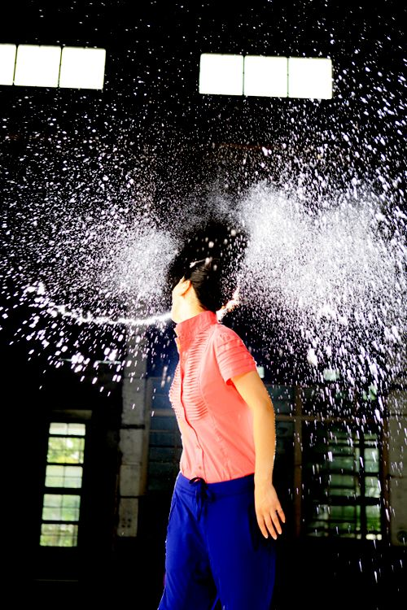
拍摄花絮 @ Jun 29, 2009
化妆师给我化完妆，在做头发。

发型其实很简单，直接上了发胶，后面盘起来。

第二阶段拍摄即将开始，我刚换好连衣裙，准备扎进闷热的空气中。
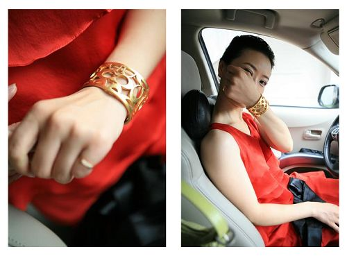
拍摄过程很顺利也很愉快，最最有意思的是忽然冒出来的灵感，最重要的是和摄影师的沟通。
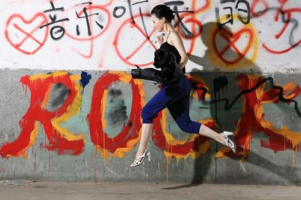
这些还不是“最终作品”，先要来几张过过瘾。
没想到我跟猴子似的，跳得还挺高，呵呵~
尤其喜欢跳跃在ROCK前，以及“音乐听我的”的手势。
既然有人询问这次拍摄的详细价格情况，我把价格表贴在这里第15楼了，真不是广告贴啊，我也是第一次尝试拍写真的。
对的，我还带了皮裤，可惜没用上，因为天气实在是太热了。
shuwua的《时代》 @ Jun 29, 2009
我想转载下面这篇文字，是因为读完后真有沁人心脾之感，在闷热的梅雨天，还有人能够如此静心品茶，好生羡慕。这是我喜欢的BLOG之一，每次看后内心会变得安静。
原文来自：南人北地手记
短短的六月，我们已经三次挥手与那个旧的时代告别。
第一次是罗京，群众觉得一个时代结束了。
第二次是柯达克罗姆，小众觉得一个时代结束了，尽管一万个人里面也不见得有一个用过这种必须送回柯达原厂冲印的幻灯片。
第三次是MJ，全球人民觉得一个时代结束了。
但是，我明天还是要上班，而且连续上五天，人民群众该干吗干吗。MJ的歌最后一次听还是上世纪吧，罗京就算他还天天上央视黄金时间，我可能也整十年没见他了，更别提克罗姆了。
等到胶片回到个人回家涂银盐的时代，我就专心喝茶了。据说，只要中国官场还在，茶的时代就不会结束。卖茶壶的说，金融危机，他们一点没有受影响，字画嫌贵，茶壶价位正好。我不小心混主流社会了。
今天我主动重温了一下旧時代，在室外最高溫度37攝氏度的天，沒有開空調。穿著輕薄不貼身的背心和短褲，身上微微發汗的情況下，泡一壺岩茶，看朱泥小壺漲满茶水，顏色變得釅暗，醉得我，茶到汗出，真覺得涼爽了。那種盛夏里的靜心，是陳年的感受。
拍啦~ @ Jun 28, 2009
两周前约了杨摄影师拍我，今天总算成行。当然天气也热得够呛，我是最爱面孔出汗的蒸笼头，担心妆会花掉。而杨摄影师拍着脱着，打起了赤膊。可以想象有多热吧？选了老地方，想看看专业摄影师能将1865里的厂房拍出怎样不同的效果，没用他们的服装，自己准备了5套衣服（用了3套），专门的化妆师化妆、整发型，且一直跟拍时刻给予补妆。看了下载后的原片，很满意杨摄影师拍摄的照片效果，之前相互交流过，基本上和我想要的效果一致，其中不乏幽默搞笑的照片。总之这次做足了腔调！所有照片要过一周才能拿到，很期待！
拍摄前的准备工作；


拍摄告一段落，与摄影师合影。


阅读街景 @ Jun 27, 2009
架在方向盘上，用50mm/1.8的头拍下的。汽车穿过镜头留下一串拖影，煞是奇异。
图一中左边的男子好象是自行车铺的老板，几分钟前一个怀孕的女人送来一个包装好的盒饭，两人气质都不错，完全超出我对修自行车职业形象的想象。夏夜的街上上演形形色色的故事，给车厢里的眼睛更多体会，只要两个人心心相惜，怎样生活都好！当你不再孤独，你还会考虑今天是否衰老，不够优秀？以及别人说什么想什么的问题吗？如果有兴趣，抽点时间，戴上MP3耳机，阅读一下街上行人的表情，这体验有点儿意思。有人曾说过：不要相信想象，要相信眼睛。


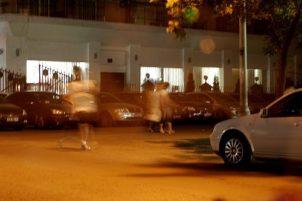

MJ的“谢幕” @ Jun 27, 2009
@June 26,2009
上班路上听到新闻报道Michael Joseph Jackson 因心脏骤停逝世，这位上世纪的音乐巨星年仅50岁，生前他已患有皮肤癌。MJ原本计划今年夏天举办最后一次演唱会作为谢幕...
还是喜欢早期的MJ，大大的鼻头，深古铜色的皮肤，黑卷发，多可爱啊。他是照着麦当娜整型的吗？把自己折腾成尖鼻子，白皮肤...追求心中的完美追求到极致，天晓得是为了愉悦自己还是心理错位？！按照中国迷信说法，自他整容后，风水是不是也会随之发生变化呢？
观察一下周围失爱的人，要么拼命折腾外型；要么迅速走向另一种行为极端；或者处于一段时期内的性格改变.....总之心理的错位，让人变得不可思议，让人迷失自己！MJ经历事业滑坡加上之后的恋童癖丑闻...我觉得死亡对MJ是彻底地解脱！
@June 27,2009
用半天看MJ的MV，听他歌，看他舞...前无古人，后.....是否有来者？
《STRANGER IN MOSCOW 》MV中，比如鸽子摆动翅膀，雨水溅起的水花、打翻的咖啡、雨中的马蜂以及棒球击碎玻璃窗的瞬间等等细节皆用高速摄影机拍摄，用24桢/1秒速度播放，画面中的每个动作的细节都象放慢动作一样，我个人很喜欢这部MV的调调。
据说Michael Jackson在俄罗斯的酒店里，听着楼下无数歌迷的热烈欢呼，内心却感到无比孤独，于是立刻创作了此曲。

I was wandering in the rain 我徘徊雨中
Mask of life, feelin' insane 生活的假面，令人疯癫欲狂
Swift and sudden fall from grace 飞速坠落，众神不再眷顾
Sunny days seem far away 艳阳天似乎还是遥不可及
Kremlin's shadow belittlin' me 克宫阴影投射，使我显得如此渺小
Stalin's tomb won't let me be 斯大林之墓不会听任我自由
On and on and on it came 慢慢地，它来了
Wish the rain would just let me 希望这雨终能令我畅怀
How does it feel (How does it feel) 这是什么感觉（这是什么感觉）
How does it feel 什么感觉
How does it feel 什么感觉
When you're alone 当你孤单时
And you're cold inside 你一定感到寒彻骨髓
Here abandoned in my fame 我的传说在尘世被无情抛弃
Armageddon of the brain 胸中善恶对峙，决战在即
KGB was doggin' me KGB悄然尾随，无处不在
Take my name and just let me be 捕去我名，使我自由吧
Then a begger boy called my name 小乞丐叫着我的名字
Happy days will drown the pain 欢乐的日子就要驱散那些痛苦
On and on and on it came 慢慢地，它来了
And again, and again, and again... 不断地，不断地浸入……
Take my name and just let me be 捕去我名，使我自由吧
How does it feel (How does it feel) 这是什么感觉（这是什么感觉）
How does it feel 什么感觉
How does it feel 什么感觉
How does it feel 什么感觉
How does it feel (How does it feel) 这是什么感觉（这是什么感觉）
How does it feel 什么感觉
How does it feel 什么感觉
When you're alone 当你孤单的时候
And you're cold inside 你一定感到寒彻骨髓
How does it feel (How does it feel) 这是什么感觉（这是什么感觉）
How does it feel 什么感觉
How does it feel 什么感觉
How does it feel 什么感觉
How does it feel (How does it feel now) 这是什么感觉（此刻是什么感觉）
How does it feel 什么感觉
How does it feel 什么感觉
How does it feel 什么感觉
Like stranger in Moscow 宛如一个莫斯科的过客
Like stranger in Moscow 宛如一个莫斯科的过客
We're talkin' danger 我们谈话很危险
We're talkin' danger, baby 我们谈话很危险，baby
Like stranger in Moscow 就像一个莫斯科的陌生人
We're talkin' danger 我们谈话很危险
We're talkin' danger, baby 我们谈话很危险，baby
Like stranger in Moscow 就像是一个在莫斯科的陌生人
We're talkin' danger 我们谈话很危险
We're talkin' danger, baby 我们谈话很危险，baby
Stranger in Moscow 莫斯科的过客
I'm living lonely 我孤独地活着
I'm living lonely, baby 我孤独地生活着，baby
Like stranger in Moscow 宛如莫斯科的过客
静止的图画 @ Jun 26, 2009
空无一人的街道，两边的梧桐树叶子纹丝不动，世界仿佛被白天的太阳烤灼后完全静止了，没有风，没有灰尘，橘色灯光笼罩下的洁净，连青蛙的叫声也没有了？心中浮出一串小小的惊叹号！走进这样一副图画中，就在昨夜。

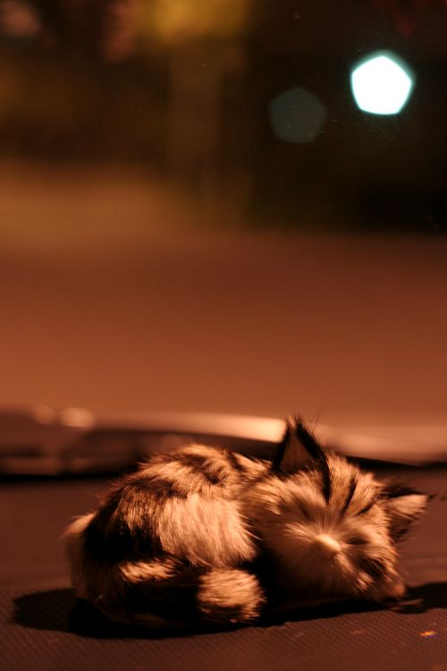
没完没了 @ Jun 25, 2009
最近迷上看电视连续剧，可是电视台插播广告的手法实在很流氓。片头来几个广告，放1/3后再插进几个广告....内容结束广告...片尾广告....放广告时会跑去洗碗，洗完了广告还没结束。那么去洗几件衣服，没完没了的广告想不深入人心也难。郁闷之余心里琢磨：偏不买广告里的商品。

ICBC @ Jun 24, 2009
Maggie昨晚用水泡饭，就咸鸭蛋解决了晚饭。好歹我还炖了粥，买了紫燕新推出的藤椒鸡和百吃不厌的翅尖，拌了个黄瓜。人的精力就好象感情，若专注于一件事便会怠慢了另一件，工作稍稍忙碌便无心思准备好吃的饭菜，混混了事。夏天的到来让人也懒惰几分，发愁每日三餐该如何解决，想想还是有人伺候的好。特别想体会那些天长日久熬成婆婆妈妈的女人，她们如何不厌其烦每日买菜做饭？
中午早早等在食堂门口，带了两个饭盒，准备打些食堂的菜回家。打菜的师傅均从中年男换成老太太，态度那个差....一同事说这态度就是你“爱吃不吃”的意思。联想到最近银行提高各种服务费用，而服务态度却未见提高，由此工商银行的英文缩写ICBC被唤作“爱存不存”。看来服务业这张统一的ICBC面孔，还得受着！
******************************************************
连续高温，换上并不适合办公室温度的真丝衣裙，想想好多年不倾向真丝面料的衣服，皆因保养和洗涤的困难。Maggie说昨晚手洗了一件，很累。而我之前是放洗衣机里洗，不是有洗真丝的选项么？有次问西门子的工程师：“洗衣机洗出来的衣服容易起球...”他说这正是他们目前无法解决的问题。所以用洗衣机很伤衣服，易褪色，且只能洗干净那些穿一天即换的，真丝、羊毛质地还是手洗洗吧。
每每穿上黑色衣服，心里就塌实。胸前这条MOS项链是一个MM说这条好看就买这条，一时拉不下脸买的。当时并不是特别喜欢，觉得太粉嫩，但和今天这条裙子恰到好处的呼应起来了。

Blogger @ Jun 22, 2009
看到王建硕的朋友TW的留言，如果你们来南京需要什么帮助，可以联系我，邮件地址跟贴在你的留言下面了。周一早晨的办公室处于一片乱战之中，忙一段落后看了王建硕的BLOG，这才得知他周末来南京参加会议。
我们是国内最早一批blogger，中国茶始于2002年4月，到2009年写了7年，中间更换过几个网址，现在看我以前写的东西简直没法看。不知道王建硕现在是否还在做他的客齐集？建硕同时写英文Blog和中文Blog，如他所写：“Christina, me, Isaac, and Robert are still writing our blogs. BTW, Christina and I was not as aggressive as the other two. Their blogs have been blocked by GFW many times - an acknowledgment of the depth of "harmful information" by the government.”
我很喜欢挂在他网址下的另一个Blog“MVM”，只是更新比较慢，好久才能看到一篇。清晰记得MVM上有一次题词这样写的：“我要躺在你的睫毛下，天天都过情人节。”大致意思是这样的，当时以为是女性blogger，看了段时间才发现是IT男，而且还是位会做手工活的男性，他烤面包，收集葡萄酒塞子，烹饪技术也不赖，照片拍的好，文字有条理，不矫情，最重要的是他身上体现出的职业精神...如此细腻、勤劳又有才华的男人估计快绝种了。总结下来那些professional，unhurried的blog还是吸引力大一些的。
点击这里看国内第一界中文网志年会的照片，可以发现最早一批blogger的身影~这件长T虽然大到无法穿，可还是保存在衣橱里作为纪念。当时会议邀请了10位中文个人blogger，更多参与的是官方代表，还有许多投资公司的人，那时网络处于容易赚钱的时期，分分钟一个新网站就出现了。

购物狂的自白 @ Jun 21, 2009
每每周日的中午开始忙，一般是送LUKE去洗澡，兼食品采购。但这个周日的中午改成收拾换季衣服，途中大脑想打退堂鼓好几次，可是心里却坚定地说：“你不可以再拖了，今天必须收拾完。”要是能有一个象PARIS那么大的衣帽间，就不会在换季的时候折腾。好在鞋子做到一目了然了，衣服还不行，收拾的时候不断惊叹：“还有这件衣服啊，都忘了。”如果衣服也可以一目了然，每一件的使用率会大大增加。这次狠狠心，能淘汰的都拣出来。如果把买10件便宜货的钱集中起来买一件品质和设计更好的，既能穿得久又赏心悦目，还节约了衣橱空间。我真的很偏爱黑色，即使夏天，黑色衣服还是占据了衣帽间大部分的色彩。其实，现在的我并不那么爱穿黑色了...
决定收拾衣服皆因前一天看了《Confessions Of A Shopaholic》（购物狂的自白），虽然是浪漫轻喜剧，可对自己还是有些震撼，当然我还算不上真正彻底的购物狂。之前给光光的邮件里写自己喜欢购物俨然有些病态，以前下班后直接去的是商场，没什么要买也要去逛逛。我觉得这是一种精神疾病，就象REBACCA说的：“购物的过程可以让人感觉美好，可是之后又会恢复到原来的情绪中....然后接着购物...”不过世上有不喜欢购物的女性吗？当然有，比例肯定很小。爱购物的人可以看看这部片子，还是很有启发的。现实生活可就没电影里运气那么好了，一切得靠自己克服才是正道。
这部剧的女主角ISLA FISHER她真的算不上标准的好莱坞甜心，身材不够“沙漏”，脸蛋不够小，但丝毫不仿碍她成为新的时尚ICON。ISLA到了33岁才等到她人生第一个女主角，该电影改编自大热的小说《一个购物狂的自白》，ISLA出演在全世界女人心中有着强烈共鸣的女主角REBACCA。她非常风趣，乐观，爽朗，还曾经出版过两本畅销小说《Seduced By Fame》和《Bewitched》。
ISLA FISHER，水瓶座，33岁，在中东的阿曼马斯喀特出生，20世纪80年代移民到澳大利亚西部的珀斯，哦，也就是上次和我一起看芭蕾舞剧的HELEN定居的地方。
学习情绪管理 @ Jun 19, 2009
我们每个人都有情绪失控的时候，很多负面情绪会影响我们的工作和生活，我们需要对这些负面情绪加以控制。对待愤怒的情绪，或是悲伤、焦急的情绪，都各自有不同的办法，不过有一个总的原则：对待强烈情绪的最好办法，还是要找到疏导感情的渠道。情绪得到了适当的疏解，不再积压在心里，在平时工作生活的时候就不会总有一块石头压在心上了。
控制情绪的办法：
A、肯定自己
其实愤怒的情绪和个人自我概念有相当密切的恶性循环关系，充满自信的人对于别人的侮辱轻慢，或许不会那么在意。为什么会在意一个不相干的人轻视自己？通常是因为我们并不能肯定自己的价值，不能确定自己的虽然有缺点、有软弱，仍然是可爱的。当别人伤害到我们，我们便无法一笑置之。
----说说我看到的故事：听见某人对朋友A评价如何如何，很生气，在A那里发牢骚，结果A淡然地说：“不知者不愠，不亦君子乎。”这样的反应在A身上很多，任何怨恨到了他那里都被化作一缕轻烟，散去。
B、表达自己
面对各样压力、挫折，很难没有情绪，我们应学习心平气和地表达自己的情绪，而不伤害别人。
----比如这一周我觉得压力很大，心情很烦躁，每天没心思注意形象，蓬头垢面，脸部肌肉下垂.......可是与过去相比我还是沉住气，等待这种情绪过去。虽然心平气和表达情绪是我比较欠缺的能力，不过随着年龄增长我在刻意培养这种能力，并希望向好的方向发展。
C、安抚自己
如果你选择不表达自己的情绪，或者当时的情况没有办法讲得很清楚，还有第二条路可以选择--就是从内在转换自己的想法，把原先引起你生气的事情重新审视一下，想想有没有别的观点或角度可以运用？任何事情本身都没有绝对的好或不好，看你用什么角度去看它。你认为这件事情的出发点是好的，心情就可很愉快。这样的解决方法，不只是抵制外在的愤怒，更能让自己的情绪得到平复的舒缓。
----我选择将情绪放在心里。疏导压力的方式我有两个，一是找朋友倾诉，二是购物。昨天下班后我就干了这两件事，先和朋友吃饭聊聊天，然后一个人去逛街购物。今天早晨心情豁然轻松。当然你得找正确的对象去倾诉，“大嘴巴”就算了，本来是为了解决情绪问题，结果“大嘴巴”会让你的问题更加严重。更不会选择父母来倾诉，因为他们听完后会比自己还沉重，然后是没完没了的唠叨.....还是放弃这条渠道吧！所以过了30岁我更倾向靠自己缓解压力和不良情绪。实在不行，就出去旅行一趟吧！工作总有累的时候啊~
无用 @ Jun 19, 2009

听见心脏跌落在骨盆的声音。。。
七种吸引力，你具备哪种？ @ Jun 18, 2009
1.你喜欢独自旅行。是 --> 2 否 --> 3
2.你每星期都会去逛街。是 --> 4 否 --> 5
3.你喜欢看浪漫爱情喜剧。是 --> 6 否 --> 7
4.你习惯早晨跑步。是 --> 8 否 --> 9
5.你认为女人最重要是婚姻，男人最重要是事业。是 --> 10 否 --> 11
6.你拥有很多知心朋友。是 --> 12 否 --> 13
7.你喜欢聊电话。是 --> 14 否 --> 15
8.你喜欢时尚衣服。是 --> 16 否 --> 17
9.你认为经济是爱情的保障。是 --> 18 否 --> 19
10.你睡眠的时间在晚上十二时以后。是 --> 20 否 --> 21
11.没事你也喜欢喝点酒。是 --> 8 否 --> 10
12.你在家养了很多植物。是 --> 9 否 --> 10
13.你喜欢听悲伤的情歌。是 --> 10 否 --> 8
14.你认为美是出自内心而并非表面。是 --> 9 否 --> 8
15.你喜欢魔术多于杂技。是 --> 10 否 --> 9
16.你并不赞成婚前性行为。是 --> A.长颈鹿 否 --> 17
17.你喜欢和不同类型的异性交往。是 --> B.豹 否 --> 18
18你常在半夜想些伤心的事情。否 --> 19 是 --> C.鹿
19.你认为自己双重人格严重。是 --> D.斑马 否 --> 20
20.你敢于主动向喜欢的人表白。是 --> E.企鹅 否 --> 21
21.你会定期去健身院。是 --> F.狐狸 否 --> G.羚羊
答案如下：
长颈鹿--你沉默、优雅，有一种发自内在的亲和气质，令人感觉舒服，在岁月的沉淀中更散发出不可抵挡的魅力。你懂得甚么叫品味，甚么是生活。在你身边的每一个人，都会感受到你的优美与友善，无关外貌，亦无关年龄，只是沁人心脾的魅力。
豹--你走在时尚的前线，总是以不变应万变获得人生每一刻的精采，同时带给别人生命的热情。你魅力四射，你的光芒更是无法被别人遮盖，你懂得如何让生命永远精彩美丽。只是有时要控制一下自己的脾气，那么你的野性和不羁就更叫人醉倒！
鹿--你崇尚简约，毫无野心，永远悄然而立，这不是漠然，而是涵养。你才华横溢却看淡一切，永远用清晰的眼光看世间的纷扰，却不刻意逃避，永远用冷静和理智去看情场上的春去春来。你自然淡雅的笑容最是迷人。
斑马--你在静态时固然表现出悠闲的优雅，即使忙碌为口奔驰，也能在日日如是的工作中散发魅力。你不会放纵自己，也不会因不值得的事情虐待自己。无论何时，你都流露出动静皆宜的吸引力。
企鹅--你善良、开朗并有一种阳光的气质。可爱又无所谓的性格是你最吸引人的地方。你的可爱并非幼稚那种，而是一种纯净的美。即使发现人性的险恶，你亦始终保持自我。你纯洁善良的笑容，可让不少人溶化。
狐狸--你有令人倾慕的外貌，并且知识丰富，有理性。在你的生命中，最不可能缺少的就是爱情，你的举手投足，引来无数异性的心旌荡漾。你既敏感又含蓄，不会有火辣辣的激情，但你懂得无数浪漫的花样，令异性喜出望外。
羚羊--表面上，你看似冷漠得有些孤傲，其实你却有不一样的热情；在你的心底更有对世间一切最纯真的想法。你有情却不多情，你可以改变却不善变。肤浅的异性不会接近你，走进你世界的必定是有内涵的人。
心力交悴 @ Jun 18, 2009
连续两天被卧室空调室内机漏水折腾，昨天维修第一次，晚上接着漏，明天准备来第二次。看来品牌并不能说明问题，即使选择了最好的品牌以及环保的“新冷酶”，还得有配套的安装、维修的技术工人才好。总有你不擅长的方面，当自己没有能力解决问题的时候，只能被他人牵着鼻子走。连续两天折腾，加上工作的压力，一日三餐的准备，以及南京第一例甲型H1N1患者的出现，真是让人心力交悴，面部肌肉下垂，职业妇女不好做啊！据说南京的这个患者从美国回来，压根没在家呆满七天，尽到处溜达，家住水游城附近......
昨天空无一人的人行道上，一个MM戴着大口罩行走在烈日下......在我看来人人都希望生活有点变化，一旦有机会，个个理所当然。偶尔一次病假，偶尔一次旅行，偶尔一次出差，偶尔一次变迁，偶尔一次青春痘、偶尔一次穿红戴绿，偶尔一次PARTY，偶尔一次相识，偶尔一次培训，偶尔一次流行病，偶尔一次...各种变化中未必都是快乐，只是有别于一成不变的生活，而新意昂然。
请睁大眼睛看车上的那行字。

赠送 @ Jun 17, 2009
饭后，商家送了两只搪瓷杯和一枚胸章。
这杯子用起来也不会比STARBUCKS的杯子差到哪里。
非常耐用。
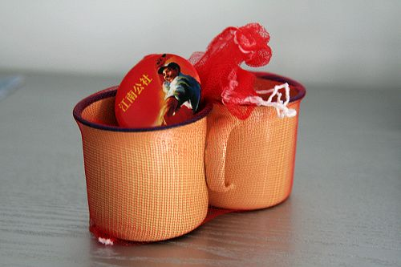
饭店的饮料杯也是这种搪瓷杯。
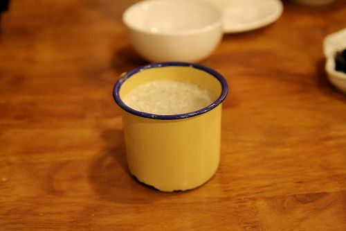
“江南公社”饭店，在里面讲话要扯着嗓门儿，服务生收拾餐具的声音那是....热闹。
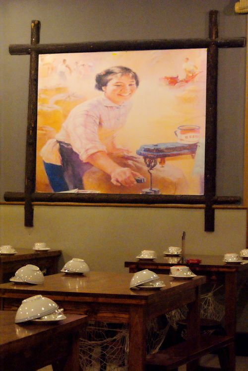
死神来了？ @ Jun 16, 2009
一早和同事聊到法航客机失事中的两段故事，一则是德国某女乘客没赶上该客机，幸免于难，结果在去意大利驾车途中出车祸而死；二则是一家四口，父母带两个孩子，玩笑地说分乘两个航班以免一家遇难，结果母子遇难，父女安全抵达法国。
第一则故事让人想起电影《Final Destination 》I II III（死神来了），我只看过其中的两部，有一部开头也是一行人赶航班，而Alex有特异功能，能看到即将发生的事情....还是蛮有意思的电影，主要讲述死神是不可能被骗过的，要你什么时候死，即使躲过一劫，之后还是会死。只有团结起来才能改变命运？问题是，我们之中谁有特异功能呢？蹊跷的是那个德国女乘客真的没能躲过死神的安排......
咋样？ @ Jun 15, 2009
活脱脱一个福尔摩斯侦探？
穿警服的小帅哥？
“象个环卫工人...”阿姨说。
呃。。。。。。
不管怎么样，花了98元量身定做的雨衣哦，自得一下自己用皮尺的技术，嘿嘿，分毫不差，穿在它身上正好。就是背上那个小蜜蜂的图案太弱。。。应该印个FBI或者骷髅头之类的。下雨吧，就象昨晚上那种雷电雨。。。出去跑一圈回来，这雨衣才值啊。话说昨天下午四点多钟洗完车，晚上就下雨，20块打水漂了。。。


观看CRC南京站比赛 @ Jun 14, 2009
今天混迹在SUBARU组织的CRC观摩团里，周转于不同赛场地点，那感觉就好象被太阳晒蔫、被灰尘掩埋、被酷热蒸发了。。。魔鬼训练营是不是就是这样的？不是组织的问题，是天气的问题。
据说看拉力赛第一次组织这样观摩的，一般都是自己清早起来找个视角好的地儿蹲点看赛车一辆一辆过，至于全程赛况，或许可以听听收音机了解点？用组织的话讲，头一次包大家吃好喝好，转移有车接车送...这种豪华观摩团。可是这种团里VIP用户少，据说南京只有10位。小报记者倒是一大堆，还有记者妈妈带着会走路的孩子一起来的，跟周末一日游似的。中午好吃好喝伺候着，吃完继续外面晒太阳，吃灰尘。要是我们的工作可以这样处理的话，晒点太阳吃点灰尘也可以啊：D
怪不得在SS9赛段观看时，把老农民气得半死，骂骂咧咧地说：“俺们6点就起来等了，你们一来把俺们的视线全给挡喽。。。”再一看人家带着凳子、水瓶、水杯、扇子、遮阳帽，妇女们花枝招展，穿戴整齐的，怪辛苦的。难得在居住地边上举办盛事，犹如给平静的湖面投下一颗小石子。。。。都给SUBARU的观摩团给搅了。
原来看拉力赛比看F1辛苦得多啊，赛车手没几个帅的，帅的那个林志颖一直脱离群众，压根看不到。所以今后看拉力赛坚决不去现场，要在电视机前看。
现场看CRC，等于一大群人集体吃灰。
后悔无数。。。。。。。。。
在SS9赛段合影，身后是沙石路面的赛道。
平时这个路上跑的都是红旋风，就是拉渣土的大卡车。

旁边戴小红帽的小孩是铁杆SUBARU迷，边看边说三菱的坏话。。。
不过能把三菱作为竞争对手，本身就是对三菱的一种承认。
要知道国际组第一名可是贵州百灵的一辆EVO赛车哦~
其实来自澳洲的赛车手这次翻车了，可能当时我们参观修车间时，他们正好在，受到了热捧。低头签名的是车手，合影的是领航员。 他们只有比赛期间才会来中国。

SUBARU亚太区新上任总裁“铃木一成”，替换了原先的大野圭。
大家都在吃灰的时候他也一起在吃灰，而且和我们一样站着晒太阳，不时拿出毛巾来擦汗。。。日本中年男人出门口袋里装着太太准备的手帕，对啊，这位铃木先生掏出的不是手帕，是一条好大的毛巾！换了国内的领导看比赛，准保有人准备好椅子和茶水，坐第一排，没准儿还弄个罩子给挡挡灰尘呢。

短发戴棒球帽就跟剪了辫子的清朝男人没两样，帽檐太低还得抬起脑袋来拍照，这下脸就更大了。

辛苦！都站在土石堆上张望，来一辆赛车欢呼一阵儿。

韩寒开的也是SUBARU的STI 。
获国际组中国车手第三名。

左边是领航员，右边是韩寒，气质老徐与韩寒。。。
还是应了那句俗语：一块馒头搭块糕？
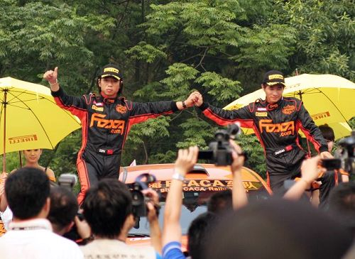
开EVO的林志颖过去了。

猜测这辆GMC是林志颖的保姆车。

李微以1小时14分52秒1的总成绩暂列全场第七、国内车手第三。

李微本站比赛使用了全新的斯巴鲁9代STI，也遭遇到了爆胎。说是撞到了一块石头，轮圈被割裂。

日本车手NONAKA的赛车，右驾。
据介绍这样的车手是自己花钱参加比赛的。
车内进行过改装，能拆的都拆了，里面加了固定的框架，看起来很简陋，但实质上是一匹猛虎。
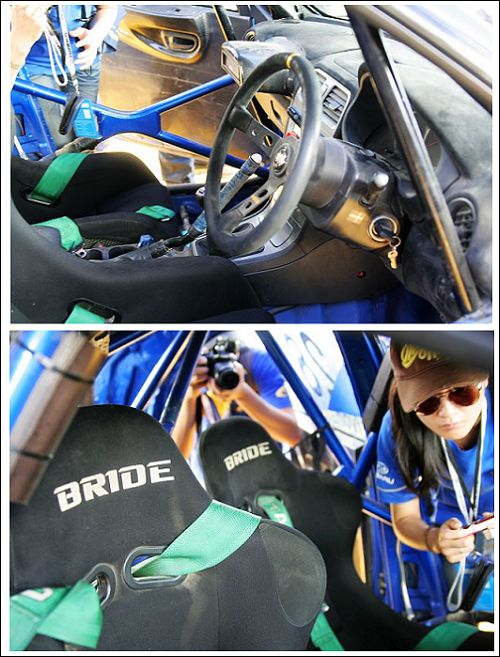
国家组一汽大众庆洋高尔夫车队陈德安/路明夺冠，该队同时获得车队冠军。

右为赛车手陈德安，这是他首次获得09年揭幕战冠军。

装备齐全。

大牌避震。

井然有序。

维修间的装备。
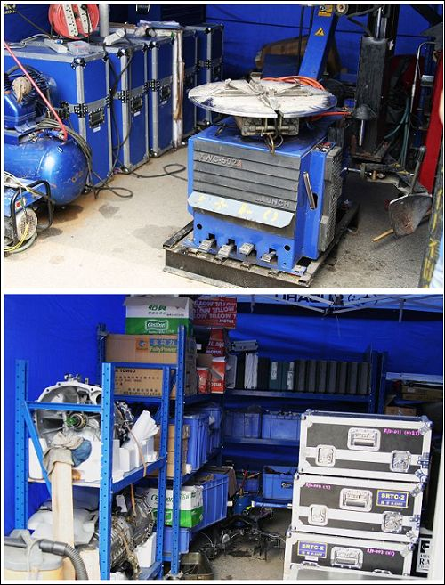
注意到这只工具箱很摆很酷，做工精致，不知道是不是国产货？
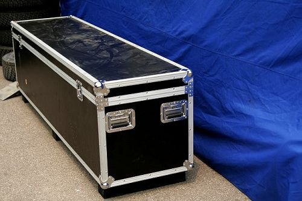
满面憔悴，脸上的斑都晒出来了。前一天晚上两点才睡，找衣服，要找的一件没找到，晕死。大脑兴奋一晚上。早晨6：30就起了...我不憔悴谁憔悴？
才初夏哎，皮肤已经被光照分割成深浅不同的区域了。

看图说话@June 13 @ Jun 14, 2009
晚上朋友约了一起吃饭，本打算穿这件连体裤外出，最终还是作罢。
周五同事说“你的确胖了，身体都圆了....”
呃.....妈呀......

路边两只小小狗打着玩，其中一只回头看我时的表情，真是好开心好开心的呢；
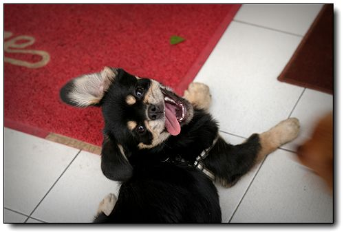
看报纸的杂货铺老板；

看车的收费员与走过的美女；

南京特产盐水鸭，这样的小店遍布南京的大街小巷；

最终穿了宽松的连衣裙出门，到了朋友居住的小区；

她家的电视新闻上报道：江苏第一例甲型H1N1流感在南通出现，是从日本出差回国的某公司总经理，其留学日本的侄子传染给他的。南京也快了吧？只要出现一例，估计大街上就能见着不少戴口罩的。

包围曝光降低两格后拍下的灯具，是不是有那么些鬼魅的气质？

自从剪了短发后便没有拍过清晰大头照，这次拍了许多；

又一张，脸无可奈何地圆啊圆啊，什么时候是尽头？

红枣莲子；

尖椒青豆荚；
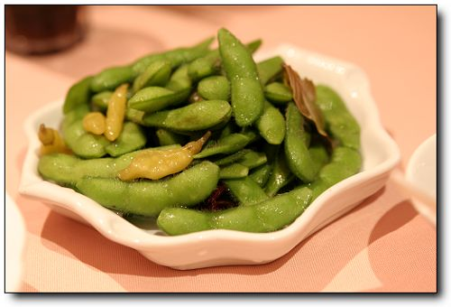
黑鱼做的沸腾鱼。那么有弹性的鱼肉，一定不能煮的？是不是用滚开的油浇上去熟的呢？
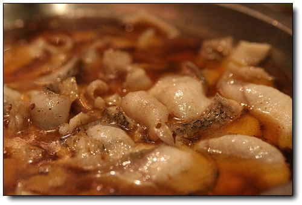
最爱的谗嘴蛙。与别家饭店不同的是，里面的牛蛙都是整只整只的大牛蛙，很过瘾；

能有人把我拍的这么清楚，真不容易；

沸腾鱼乡停业一段时间后重新开业，搬到原先同层楼对面的房间，店面小了许多，菜单也简陋到一张纸.....谗嘴蛙比过去要稍微咸一些；

吃到人去楼空，其实是聊到人去楼空；
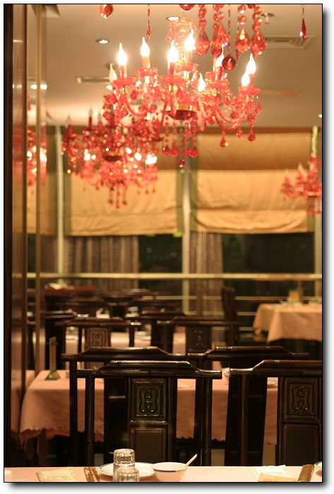
开瑜珈馆的MM，性格很好的女孩子。
发现周围的女性朋友多是美女啊，最主要是气质都不错。
有本心理杂志上说能和美女做朋友的同性心理健康，抗击打能力强，性格好。
缩小后的照片失去了细节的美，有好几张我自己看了都惊讶，可能是灯光太照顾我的相机了；
镜子里的她；
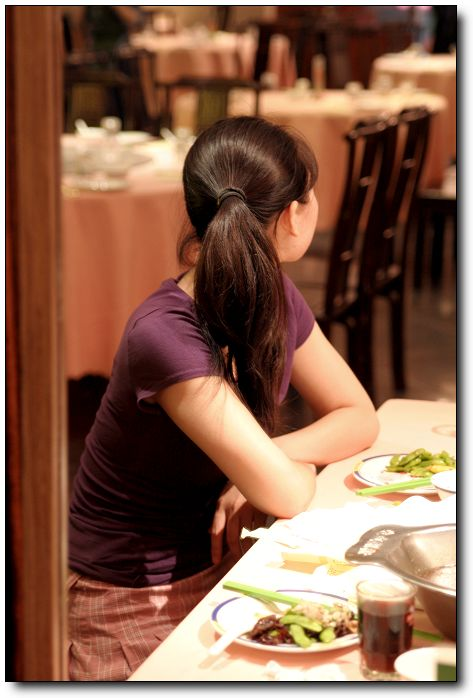
红到心窝里去了。

等。。。待。。。 @ Jun 12, 2009
等待下雨，好让雨水冲刷掉车身上的泥点。
从晚上等到早晨，还要等到午后？
午饭吃完满脸是汗，还有半天的工作便可暂且轻松。
周末有我满心等待的活动，喜悦。
**********************DRESS BLOG*******************
这周工作比较忙，偏休闲搭配多，今天集中上传了。
忘记星期一穿了什么......
尤其喜欢昨天的长体恤+7分牛仔裤+平底鞋，以后补拍。
@星期二
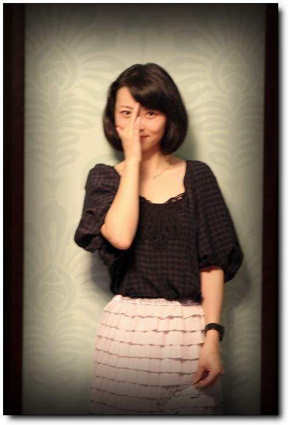
@星期三
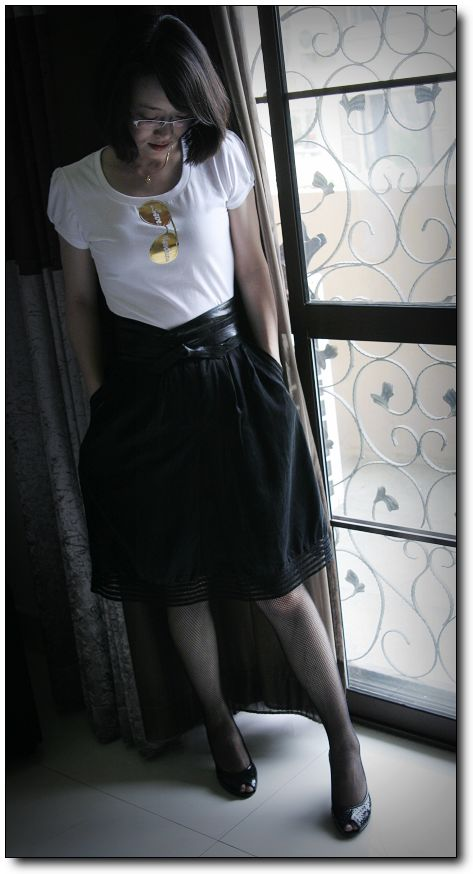
@星期五

通胀？通缩？ @ Jun 11, 2009
经济专家说通货膨胀已经来了。大家存在银行的钱眼见着缩水，很多人把买房子当成储蓄保值的手段，闻听近期楼市回暖，是买房子好时机，周围人蠢蠢欲动的多起来。可是郎咸平说：“未来2-10年中国99%的白领以及他们的家庭即将面临破产。而且是必然破产！无路可逃！那么还买房子干嘛？”
10年一遇的经济危机中，中国似乎被排除在外，饭店里宾客满堂，商场里人潮涌动，可以看到，商品价格下跌，工资没有上涨，既然物品价格没有上涨，何来通货膨胀？金融市场是实体经济的晴雨表，但不适用于中国。主要因为A股市值大部分都是大型国企和银行，而这些与政策相关、由行政主导的行业并不能代表一个国家经济的真正情况。那么政府一定会不惜一切手段控制通货膨胀。
事实上通胀未必是坏事，固然大家的存款缩水，但通胀往往也是伴随着工资收入的提高，试想工资上涨，个人存款未减少，还有能力支付房贷，拉动内需。政府强行控制通货膨胀带来的必然是通缩，有人说“通缩意味着收入和支出的减少，必须不断节衣缩食，是个痛苦的过程。”
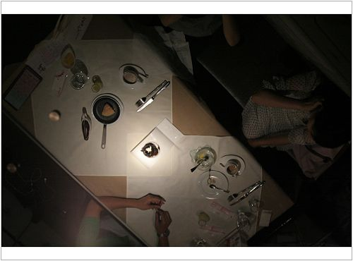
《梦的1/4旅行》书评 @ Jun 11, 2009
看到和菜头为《梦的1/4旅行》写的书评，有意思，留言更有意思。对不起，我只看完了书中陈问问和项斯微的作品，尤其喜欢陈问问那篇《遇上更小的我》，项斯微有些文字比较适合我们这样的上班族看看，圆脸的她应该是开朗而可爱的女生吧？
除了沈大成的BLOG没看过之外（找时间要看看的），其余三个人的BLOG均拜读过，荞麦的博客看过一小段时间，渐渐便淡了，就象和菜头书评中所写“文章太过精巧，技术太娴熟，反而少了一点浑然天成的感觉。”目前天天看的是陈问问和项斯微的博客。看来无论书读得多寡都一样不喜欢看人耍技巧，无论是文字里还是现实生活中。
听横戈说和菜头为《城客》在写专栏，同时也为BLOGBUS写的项斯微居然使用的是酷歪的BLOG，不多说了，转载一下和菜头的书评：
周六晚上柏邦妮大宴宾客，我也骗得一席。据说柏老师一早就出去菜市场抢海鲜，回来的路上坐“蹦蹦”在大雨中逆行，命悬一线，好不惊险。在北京饭局很多，但是家宴却很少。在柏邦妮之前，一毛老师多次请我品尝他亲手做的牛肉面和阿一鲍鱼，已经达到了职业水准。另外一次是庄羽，去年中秋的时候，两口子邀请我去他们家过节，说是怕我在北京会觉得孤单。
柏老师在饭前送了我一本书，让我拿回去看看。说是一位朋友托她转交给我，但是我死活记不住那人的名字。我只记得那晚我们吃的是酸汤火锅，涮了一条鳜鱼，两斤竹节虾，三斤贝壳，十多个扇贝，两斤羊肉，外带一份糖醋排骨和烟熏猪耳朵。当然，还有许多青菜，但是我同样记不得它们的名字。因为是吃火锅，我半个小时就觉得很饱了。而当时我并不知道，柏老师她们还会继续战斗两个小时。所以，我盘踞在一张很舒服的沙发上，翻完了她给我的这本《梦的1/4旅行》。
为什么叫《梦的1/4旅行》而不是《梦的0.25旅行》？原因大概是有四位女作者，这本书是她们的合集。封二印了她们的Blog，其中居然有三个是BlogBus的用户（小资密集区啊）
我个人觉得，她们一人出一本书可能更为合适。现在这个样子，书有345页，实在是太厚了。中间点缀了许多可爱的漫画，但是在这样严肃的厚度之下，根本觉察不出这本书的内容有多轻盈。而且，四个人的文章密密麻麻地放在其中，篇幅短小，又没有足够的插画，让人读得很累，我到最后几乎已经完全陷进了沙发。
它本来是4个女孩子讲故事，有点像大家比拼谁写得更《小王子》那样的文章大会。最合适做成独立的小开本口袋书，然后配上大幅的插画，就可以让读者拿着它们在地铁上梦游，在枕边一起周末。而345页的一大本书拿出来，怎样的梦都吓醒了。
既然是合集，不可避免的要论一下高低。沈大成写的《从前有个人》系列，我个人非常不喜欢。她写了一堆想象中的国家和国民，但又映射现实，就变成了寓言那样的东西。一篇两篇尚可，通篇都是那样的短文字，阿拉实在是吃勿消。以文采而论，她是四个人里最弱的一个。无论是遣词造句，还是叙述结构，她真做到了“简单”二字。不是简约或者天真的那种简单，而真是简单。在风格上，她又模仿香港报刊的专栏。看着上世纪流行的寓言故事，又配上港式专栏风格，我觉得时空很是错乱，看完了之后不知道应该怎么表情。
荞麦的《走路去麦田》基本上围绕一个叫栗子的女孩在讲。27岁的经济适用女，生活在大都市，对生活有些感悟，不长的人生里有些小故事。荞麦可能是这四个人里笔力最强的人，文章结构都很精巧，文字也精准锋利，情绪的微妙处把握准确，应该会有许多人喜欢。我很希望她能出一本关于栗子的书，选择生活或者情感上的几十个侧面、瞬间。以她的文字能力，应该可以把这个女孩子表现得非常生动具体，能打动许多人，觉得自己就是那个栗子。不过，我个人把荞麦放在第二位。原因是她的文章太过精巧，技术太娴熟，反而少了一点浑然天成的感觉。梦也好，情感也罢，应该混沌一些。
我个人最喜欢陈问问写的《遇上更小的我》。以技术而论，以工整而论，她比不上荞麦。但是，她是这四个人里唯一一个真在做梦的人。看她写的小故事，初看很笨拙，大概写得也慢，但是几乎每一篇都能打中你心底里的什么情绪。往往看完一篇，心里就蓦地翻滚一次。她和笔下的所有人物和故事都保持了相当的距离，几乎不使用心理描写、旁白，而是用最简单的字句去讲好一个故事，从头到尾都是叙述性的文字，但是这个故事却很动人。四个人里，真正有《小王子》那种对生活的洞彻但是又不失悲悯之心的，只有陈问问。她在技巧之上，所以我最欣赏她。
项斯微，《吃掉所有黑暗》，这是一系列植入式广告软文。我个人很不理解，为什么她会出现在这本文集里？如果想读类似的文章，女性杂志上大把，也一样充斥着各种品牌名，外带各种英文店名，结果连一个故事都讲不全。讲故事就是讲故事，玩魔术就是玩魔术，靠障眼法写故事不成，没人有耐心看下去。
本书28元，除4得7，它起码值14块。
来自豆瓣————
***“项斯微”小组
***《我更喜欢的是她的方式》
S梦S @ Jun 09, 2009
昨天晚上梦见一条蟒蛇，不是普通的蛇，是蟒蛇。
我和一群人在它到来之前想办法建起护栏...
可笑的是护栏非常矮，只到我膝盖位置。
两节恍恍悠悠的白色护栏，用绳索扎在一起，我家Luke也在帮忙。
可是总也弄不好。
而蟒蛇已经到了这座平房的外屋...
我让一个同事把所有斧子都找出来。
结果都是非常迷你的斧头？！
我又找来长短不一的螺丝批塞进裤子口袋。
心里琢磨着要是蟒蛇进来我就用螺丝批扎它的嘴巴....
这时候....恐惧让我在黑暗中惊醒。
清醒的白天我在想我有那么勇敢吗？
剥辣椒 @ Jun 09, 2009

剥辣椒籽之后，双手象被火烫过一样，手指挠过的左面颊也是，朝镜子里一看红红的一片。真是特别烫、特别热、特别辣....让人不能忽视的感觉，暗自庆幸没用手挠眼睛。用冷水冲，洗手液洗，似乎稍微好一些，可是洗澡之后双手再一次剧烈的灼烧起来，不知道是怎么睡着的？这种红辣椒特别小，还没有我的手指长，却能折腾你到翻天覆地！
转瞬即逝的两天 @ Jun 08, 2009
昨天去菜场买菜的路上遇到下面这个车队，红色是LINGLONG女子车队的车，前面拖车上是8代和9代的STI。有点小激动，本应该直行的，见一行车队从眼前开过，立刻打右转跟在车队后面拍了几张照片，搞得跟狗仔队似的。前面红色车是用三菱LANCER改装的，开在路上的声音跟飞机起飞的噪音差不多分贝，那是一种低沉的噪音。怪不得最近在路上总能遇到光鲜亮丽的改装车，原来全国汽车拉力赛（CRC）首站将于6月12-14日在南京江宁区举行，从车手报名情况看，包括韩寒、林志颖、刘斌、短道速滑名将杨阳等诸多明星将参赛。
南京有个车手参加，据说是做手机生意的。这种车手资格证书自己可以花钱去北京培训，整个培训费用为6000 元，包括执照费、训练费以及一套连体赛车服和一双赛车鞋。此外，车队还会安排专车接送学员往返于市区和训练场。接着考一本D级赛车驾，然后改装一辆赛车，参加一次比赛，如果有厂商看中你，你就可以成为一名真正的赛车手。
前些时候杭州开EVO撞死阳光青年的那小子，从小也是开卡丁车的，据说“一般20岁左右没人看中你的话，基本没什么希望做一名出色职业赛车手了，当然这是针对极速赛车而言的。而不是那种需要丰富经验的沙漠越野拉力赛的车手。”不知道这样的说法是否正确？

前一日见文怡教人做懒汉饭，第二日见蚊子象模象样地做了一份，第三日我也做象模象样做了这份“土豆饭”，我打算日后将土豆换成蔬菜粒（包含玉米、胡萝卜和青豆）试试。

这是带它去洗澡，然后再次剪短它耳朵上的毛，希望散步时耳朵不要拖在地上扫灰尘。牺牲点形象，换来好的卫生，值得。

周六早晨钟点工阿姨发来短信：在你家门口放了一把花，给你的。
我打开门一看，一个小塑料袋里装了一把栀子花，心里一暖。
赶紧找了玻璃器皿放上水将这些花插在里面，摆放在卧室的窗台上。
夜晚整个卧室分外清香，今天连客厅都香了。

操他大爷 @ Jun 07, 2009
是狗疯了还是人疯了？
比畜生还不如！！！
2009年5月31日，陕西洋县在全县3206平方公里范围内进行了一场无差别的大屠杀——屠杀对象是狗！该县无论是否领取了准养证、是否注射了疫苗、是否栓、圈养，都将于5月31日被处以极刑。
洋县是在黑龙江黑河市想成为无狗县的失败后，率先成了全国第一个无犬县。
（综合网上来自洋县用户的信息）


以下来自黑麦的BLOG
一、汉中市区：
1、亲眼见打狗队，据当地市民反映打狗事件不断发生。
2、具体事件如：一名老太太带狗在市场买菜，狗放在车篮内，品种为小型京吧，打狗队趁老太太不注意，抱出来就乱棍打死。菜市场人数众多，老太太精神几乎崩溃，当场很多人也无法接受，当场也吓哭了不少小孩。
二、汉中洋县：（至2009年5月29日已捕杀2万多只）
下达命令部门—当地政府
执行部门---武警、社会闲杂人等（统一服装）
捕杀范围：所有犬只，不论大小，品种，是否有主犬
方式：
1、首先是以注射疫苗为名，诱骗公众填表，获取养犬户的详细资料，名为免费注射疫苗及办理养犬证资料登记；
2、事实为，登记之后直接上门捕杀犬只，采取方式为：棍棒打死；
现实情况：洋县当地犬只已全部捕杀完毕，送走犬只强令要求2日内送回并交由处置，每户交纳100元尸体处理费及罚款；
3、处理方式：洋县当地运输—农用运输车，每日平均2-3车犬只尸体，掩埋处理
实施部门—当地防疫站；
4、最新资料：2009年5月30日18：30分
2009年5月30日黄金侠镇（离洋县40多公里）：当日捕杀840余只
2009年5月31日及6月1日将捕杀完毕洋县辖区内所有犬只，争做“全国第一无狗县”！
5、具体事件如：一金毛在家中，无外出，打狗队根据前期登记的资料，上门捕杀。狗主出示犬只证件及疫苗证书，跪地相求，但是打狗队仍然执意执行，乱棍打死。狗主无奈，眼看求助无门，只能转而跪向自家犬只，流着眼泪说无法保护它，只能让它接受这残酷的事实，亲眼看见自家犬只在乱棍下死亡。狗主精神几乎崩溃。
L.O.S.T. @ Jun 07, 2009
信心十足的去拍霓虹闪烁，可是很难！
既没有激情也没有热情，更没有灵感，所有照片上的颗粒都比较明显......
灰心之下拍照最终变成了促膝长谈，内容是：LOST......
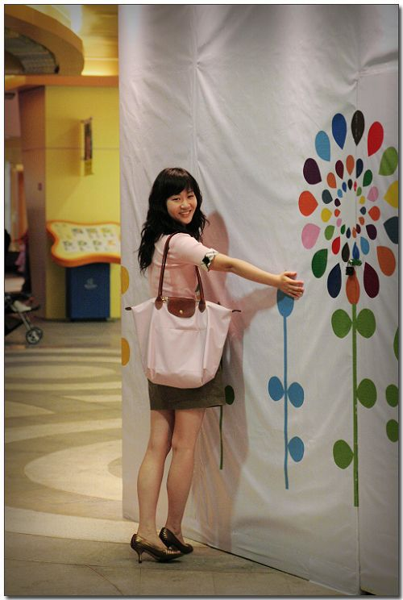
整个辛勤劳作后最喜欢的一张照片，Sherry称之为“火焰山”。

为什么总是选在水游城练习拍照呢？其实我很不喜欢去人多的地方。
大概这家集休闲、娱乐与购物一体的商场正好在我们两家的中间位置，除了购物闲逛的人也不少，其中也偶见一两个摄影党穿梭其中。
在Sherry的促进下我也开始捧起摄影书籍学习了，好多年只是拿着相机随便拍，没有真正投入到严肃的学习中，那么进步也是显而易见的少之又少。

MUJI？恩~
里面的衣服可以说是最时髦的，因为它们很环保；
也可以说是劳保用品，因为它们技术含量很低。
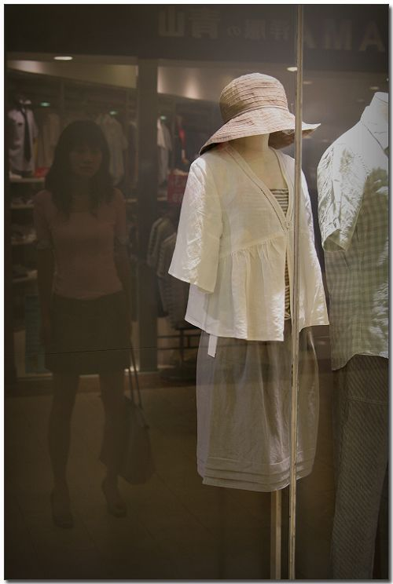
颗粒.....颗粒......让人灰心的颗粒.....
最近在看大师们的摄影作品，越看越了解自己对于摄影的寡薄。
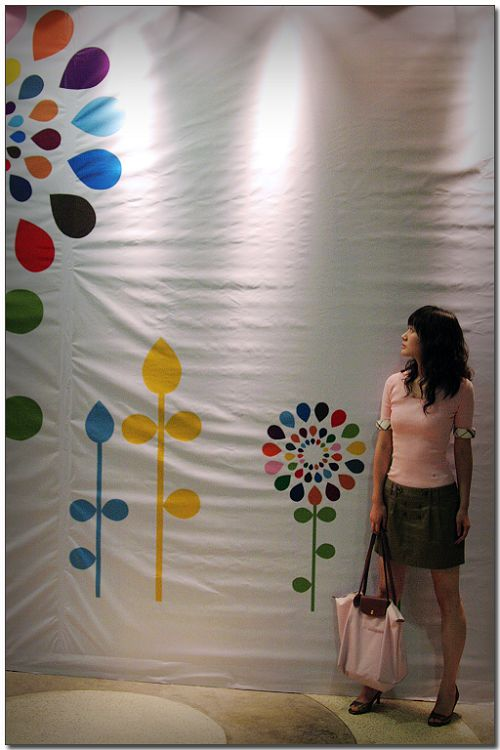
各穿了热裤和超.....短裙的女士，匆忙从我的镜头前闪过。
很摩登很摩登，在人群中一眼就能看到。
我甚至觉得她们更象是要参加某个PARTY而打扮的装束。
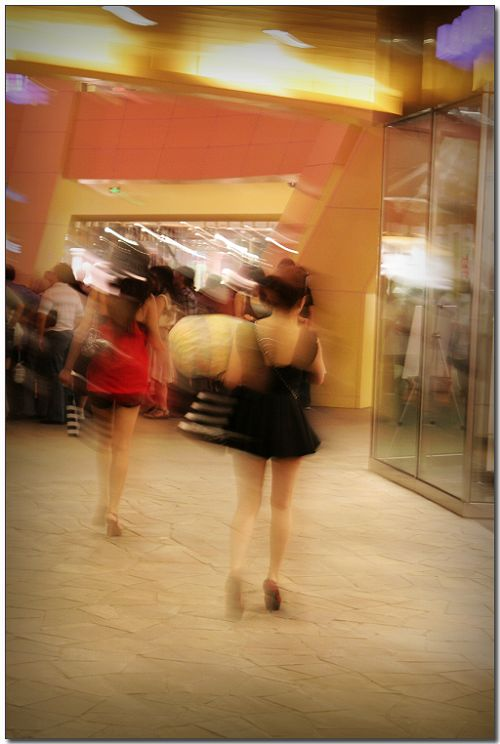
***********************C.H.A.N.G.E.***********************
又剪短了，80年代阿姨头。
用她的话讲一个小女人变成一个男人婆？！
还需要女人味做什么？还是剪了的好。

消极情绪 @ Jun 05, 2009
终于忙完了，决定在办公室写完这篇再回家。
比往常忙得多的一周，还留有工作时的焦虑和烦躁。时常要控制、平衡，让一切井然有序，条理清楚，看起来合乎逻辑...什么时候不小心就乱了，就会怨气冲天。当有人在这个周末失去了幸福感，我也有点活腻了的感觉，恨不能撒点野，破坏一下秩序，工作的，生活的，世界的。有时下班的路变成大脑里的一片空白，仿佛暂时的失忆，又好象是乱战后的一丝喘息。当我带着焦虑回家，就会问自己：这一天究竟有什么意义？
有一天，J在线上说怀疑自己得了忧郁症，这个年业务量超千万美元的家伙也会有此烦恼？工作的价值感并不会让人更快乐？可是人生大部分时间都在工作，除此之外似乎没有什么特别值得开心的，上下班，回家吃饭睡觉，再上下班...“培养点兴趣爱好吧，不然人生还有什么意思呢？”我说。
当这一天让人感到消极，就会在离开公司后不顾一切地扎进爱好里，比如今天晚上约了Sherry一起夜拍，想尝试一下霓虹前的人像摄影。如果搞砸了，明天继续...
其实消极情绪未必不好，它可以让你不那么飘飘然，让你双脚落地行走，让你的表情严肃且凝重，反应迟钝可以放缓脱口而出的速度，消极不会使你过于张扬，公共场合下一个唧唧喳喳、疯癫嗤笑的的成年人多少显得有点二。如果那样还不如消极点的好~
下面这副照片是日本摄影师的作品是我的style。以我浅显的理解摄影技术仅仅是一部分，对于画面的想法也很重要，以及镜头下模特的表现力等等组合起来才能促成令人动心的作品。下图中模特的发型和虎子有得一拼，这是缩小版的虎子。曾经嘌过虎子微胖的面颊，要想有腔调怎么着也要把脸上的肉去掉一厘米吧？
这是网站地址：takay-bio
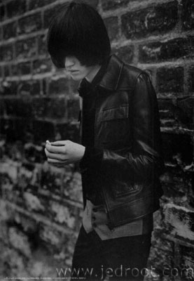
******************擎天霹雳=摄影泡汤********************
罗京走的早晨一直忙到晚上下班，结果刚下班外面已经刮起狂风，到家，开始霹雳闪电，这日子还让人过吗？和Sherry通了几次电话，最终还是没能出去。10点半左右雨是停了，哈欠又开始上演，洗洗睡吧~
差.......距 @ Jun 04, 2009
特别喜欢法国时尚摄影师Jean-Baptiste Mondino的作品，不对比不知道，一对比吓一跳。好摄影总能打动人，这时候我会特别兴奋，想马上拿起相机...摄影初期是不是和写作一样也存在模仿的规律？喜欢口味重的摄影，通过观看Mondino的作品，感悟出即使色彩浓郁，画面也可以表现出层次感。


心里怯怯地地问自己：这一张可以放在大师作品下面吧？
好象在上传之后，画面质量总会损失一些。

动．荡 @ Jun 04, 2009
听说flickr封了，难怪有些blog上的图片都成了小叉叉。
“一切免费的都存在风险。”我的耳旁想起若干年前goghs的声音。
六一短信联系他，祝贺是假，主要是想知道他是否还活在人间。
“尚未弃世，感谢CCTV，感谢CHANNEL V.....”
老顽童周伯通，经历越多人越“傻”。
这两天耳朵总被一群嗡嗡嗡的声音充斥着，一会儿买房子，一会儿卖房子，一会儿装修，一会儿出租，一会儿投资，一撇嘴又变成工作区频繁外露的2/3乳房....中年的荷尔蒙果真比任何时期都要动荡而敏感？从公司说到家，再从家说到公司...不厌其烦。有时我真的很想拿棉花棒清理掉耳朵里嗡嗡嗡的声音。
总有做不完的鸟工作，但脑细胞活跃在各话题之间时也可稍作休息。经济在嗡嗡嗡的热议下跟买卖茶叶蛋一样.....嗡嗡嗡将我的牙齿酸倒一片，见过内敛低调的，也见多了眼高手低...一个自以为是标榜自己为无产阶级在当今社会应该感到羞耻，这种标榜下的无产阶级就比别人高尚又高明？现实比观点更残酷，中年有愿望也是好的。
象美食一样满足。 @ Jun 03, 2009
下午三点多就饿了，终于盼来晚上的大餐。
比起过去现在的我更热衷于美食。

德国猪手让人失望，油腻炸得不彻底，隐约品出猪脚上的腥味。见另两人点的牛排很好吃的样子....我的胃都在遗憾。还有甜品可以期盼，不是吗？


带果冻的甜品。
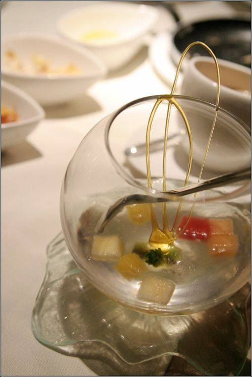
上座率不高，但很安静，不用扯着嗓门说话了。

服务非常好，准确地为各个客人上菜，不问一句话。

蓬头垢面的今天。
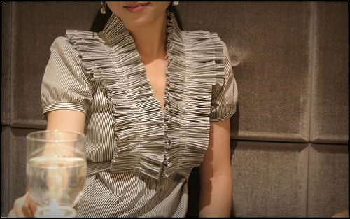
名为“毁灭地球”的甜品，里面冰淇淋，外面球状巧克力。
将器皿里盛着的热巧克力浇灌在球体上食用。

地球原来是这样毁灭的....
名字很酷却没有我喜欢的巧克力慕丝好吃。

美味六一 @ Jun 02, 2009
六一这天Luke享用了很多的美食，一只母鸡和四只蟹黄包。
这只鸡在冰箱里冰冻了2个月，找了一只最大的锅也未能完全装下它。于是它就这么硬棒棒地被煮熟，然后被剪刀剔下鸡肉放在Luke专门用来装美味的碗里。只要拿起装美味的红色塑料碗，Luke就会异常有耐心的抬头凝视着人类往碗里装各种食物的过程，那时侯的它很安静，很安静，很耐心，很耐心...
可是今天Luke将便便居然排泄在家里$%^&*#@!*~有意思的是它貌似聪明地将便便解在厨房门口的地垫上.....被我一顿训斥后，低着脑袋两秒迈一小步(太空步)拣一个角落趴下，那摸样真有低头认罪，又希望被宽大处理的姿态。这时候让它干什么它都会逆来顺受，比如下面两张照片，太配合人类的镜头了~只是，上个假期它被修理成夏天的形状，宠物店的阿姨将它身上的长毛一根不剩的剪掉，一个夏天的光蛋诞生了！不知它是否感到清爽？反正人类看着是清爽了许多。
夏天毋庸质疑的来到，白天的luke会分别捂热地面的每一处，不断的捂热，不断的更换...捂热。它一定喜欢夜晚的夏天，空调使它和人类共处一室，并美美地呼到天亮。
六一的昨天，jiajialing奇迹的在茶上冒出来，就象他在MSN上某天奇迹地说话一样令人惊讶，在茶的反向连接里发现有人在网络上搜索jiajialing，既然想了解他，而他的blog终于弄好了，但不知道是否是最终版本？自豪地推荐一下“这个一起徒步旅行的1/8份子，这个跑去澳洲掩埋青春、08年暴雪从上海一起开11个小时汽车返回南京、我的单反相机启蒙老师”的blog：All the past has gone,try to remember something...

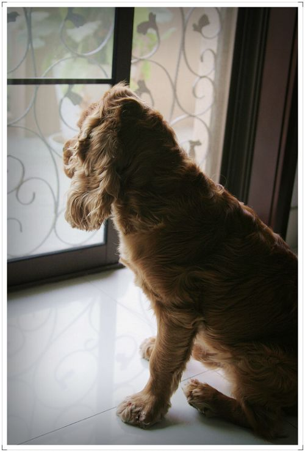
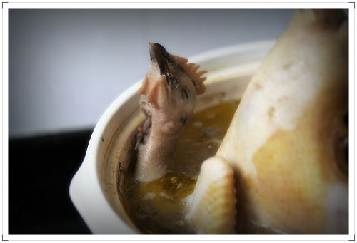